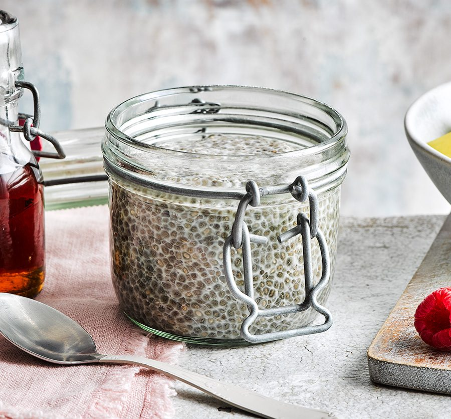

Chia Pudding Recipe

Description
Nutrient rich dessert to stack up some protein, antioxidants and omega 3.
Instructions and images from BBC Good Food.
Ingredients
- 2 tbsp chia seeds
- 125ml oat milk, or substitute for any nut milk, rice milk or dairy milk
- 2 tsp maple syrup, plus a drizzle to serve
- fruit, such as berries, banana, kiwis or mango, to serve
Steps
- Combine the chia seeds, milk and 2 tsp maple syrup in a jar or bowl. Cover and chill overnight or for at least 8 hrs.
- When ready to serve, top with fruit and a drizzle of maple syrup.